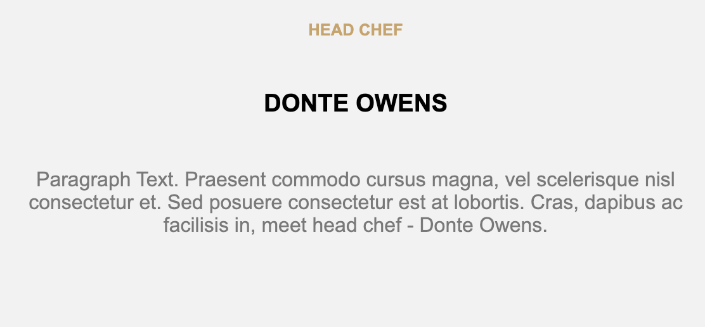

Det här projektet var en del av en övningsuppgift där fokuset främst var på att leka runt med CSS Grid. Den här hemsidan har både bilder och text som är utplacerade olika på hemsidan. Den är skapad med Grid-layout! Det har varit väldigt nyttigt och lärorikt att få exempel på hemsidor som vi kan öva på att efterlikna. För mig har det varit en perfekt utmaning.
